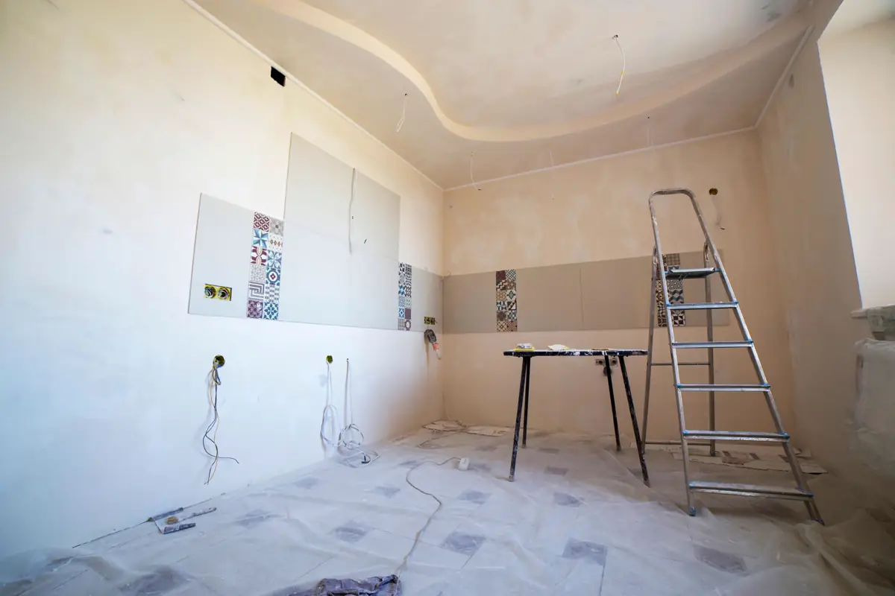
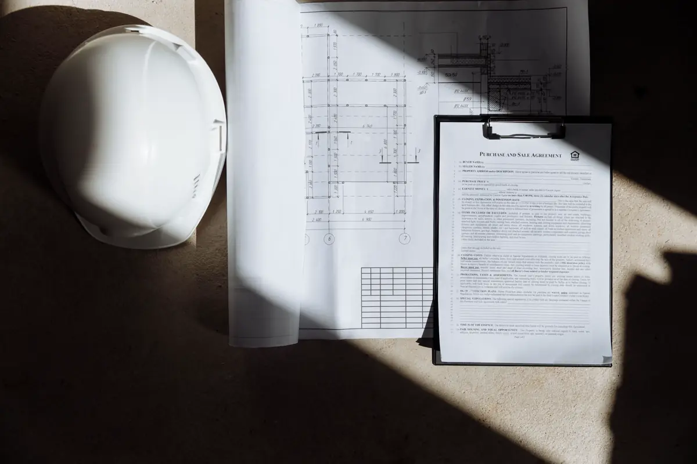
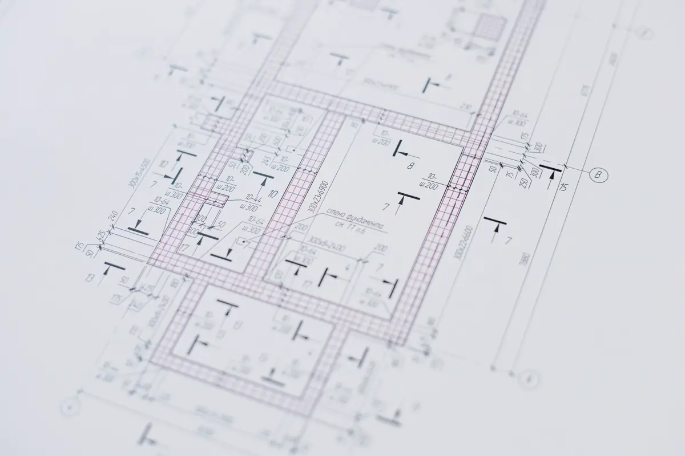

Por que o condomínio pede ART para a sua reforma
Desde a ABNT NBR 16280:2015, toda reforma em edificação precisa de um plano apresentado ao responsável legal — em condomínio, o síndico — antes de começar. Quando a obra mexe em estrutura, vedação, instalações, impermeabilização ou fachada, o plano exige responsável técnico com ART ou RRT. O síndico que libera obra sem isso responde pelo que acontecer com a estrutura e com os vizinhos.
É por isso que a portaria barra o pedreiro sem documento. O plano de reforma resolve o impasse: diz o que pode ser feito, como, em quanto tempo e quem responde tecnicamente.
Equipe técnica pronta para atender toda a demanda em Vitória, Vila Velha, Serra, Cariacica e região: o orçamento, o agendamento e o acompanhamento ficam centralizados na Axial Engenharia, do primeiro contato à entrega do documento.

O que a norma pede
- Plano de reforma com descrição dos serviços, impacto nos sistemas da edificação e prazo;
- Responsável técnico pela reforma, com ART ou RRT, quando houver alteração de sistemas;
- Identificação de quem executa e dos horários e acessos de material e entulho;
- Análise do síndico — que pode contratar assessoria técnica para conferir o plano;
- Termo de encerramento ao final, atestando que a obra seguiu o plano.

Posso derrubar essa parede?
É a pergunta mais comum, e a resposta depende do sistema construtivo. Em prédio de alvenaria estrutural — comum em empreendimentos econômicos na Serra e em Cariacica — a parede é estrutura e não pode ser removida nem cortada para passar tubulação. Em prédio de concreto armado, a parede de vedação pode sair, mas é preciso conferir se não há pilar embutido, prumada de instalação ou carga de alvenaria do pavimento de cima apoiada na laje.
| Serviço | Precisa de responsável técnico? | Ponto de atenção |
|---|---|---|
| Pintura e troca de louças | Em geral não | Ainda entra no comunicado ao síndico |
| Troca de piso e revestimento | Sim, quando altera carga ou impermeabilização | Box, varanda e área de serviço |
| Demolição ou abertura de parede | Sim | Alvenaria estrutural não pode ser removida |
| Instalação elétrica nova | Sim | Capacidade do circuito e do padrão de entrada |
| Fechamento de varanda e ar-condicionado | Sim | Regra de fachada da convenção |
| Ponto de gás | Sim | Estanqueidade após a obra |

Como funciona o atendimento
A partir da planta do apartamento e da lista do que você quer fazer, é feita a análise do sistema construtivo e uma visita ao imóvel. O plano sai com a ART, pronto para protocolo na administração. Ao fim da obra, uma vistoria de conferência gera o termo de encerramento.
Apartamento recém-entregue? Faça antes a vistoria de entrega e cobre da construtora o que estiver errado — reformar por cima apaga a prova. Se a reforma envolver a área comum, ela entra no plano de manutenção predial do condomínio.
Perguntas frequentes sobre reforma e NBR 16280
Toda reforma precisa de ART?
Não. A NBR 16280 pede plano de reforma comunicado ao síndico em qualquer reforma, mas o responsável técnico com ART ou RRT é exigido quando a obra altera ou pode comprometer sistemas da edificação, como estrutura, vedações, instalações, impermeabilização e fachada.
O síndico pode proibir a minha reforma?
O síndico pode barrar o início até receber o plano de reforma e a documentação exigida, e pode vetar o que contrarie a convenção ou comprometa a segurança. Com plano técnico e ART, a análise passa a ser objetiva.
Posso tirar uma parede do apartamento?
Depende do sistema construtivo. Em alvenaria estrutural, não. Em concreto armado, a parede de vedação pode ser removida depois de conferidos pilares embutidos, prumadas e cargas. A análise técnica responde caso a caso.
Quanto tempo leva para sair o plano de reforma?
Com a planta do apartamento e a descrição da obra, o plano com ART costuma sair em poucos dias úteis após a visita.
O que é o termo de encerramento?
É o documento que fecha a reforma: o responsável técnico confere que a obra seguiu o plano e entrega ao síndico, encerrando a responsabilidade aberta no início.
Reforma em condomínio na Grande Vitória
Plano de reforma NBR 16280 e ART para apartamentos e salas:
A portaria barrou a obra?
Mande a planta e a lista do que vai mudar. Retornamos com o plano, a ART, o prazo e o valor.